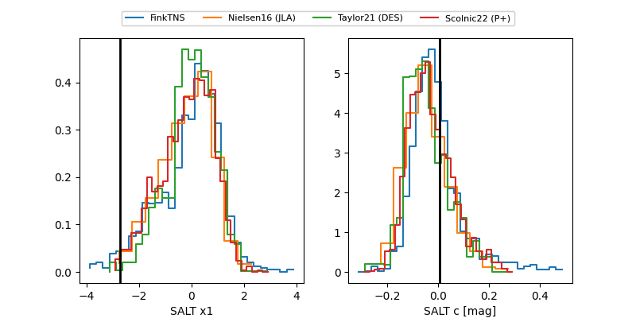

FINK: ZTF18aafjsub
Lasair: ZTF18aafjsub
ALeRCE: ZTF18aafjsub
ZTF18aafjsub (ztf,fink)
equatorial (ra, dec) = (108.1780,+26.23077)
galactic (l, b) = (191.2309,+15.99414)

last ztfr=19.44
3 ztfr detections